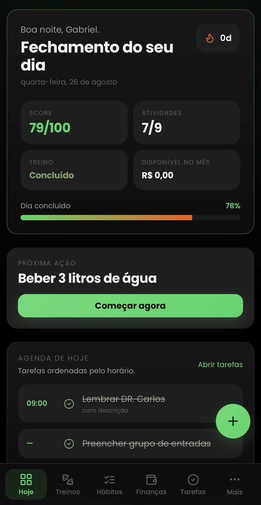
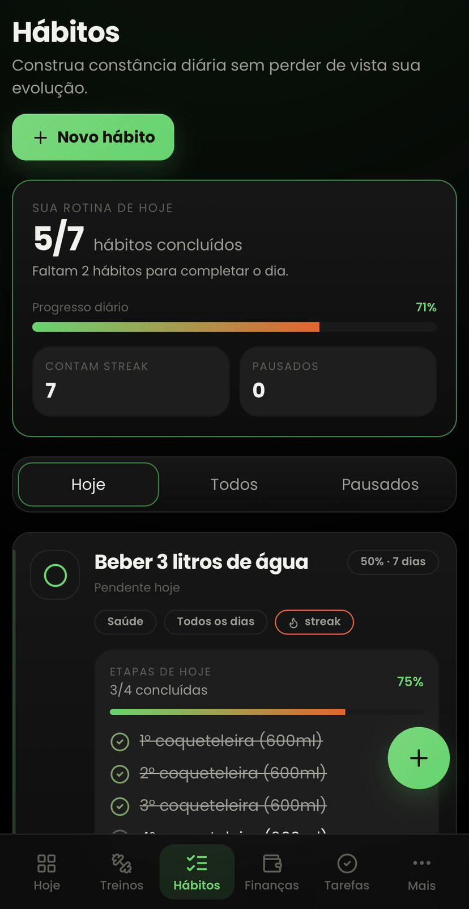
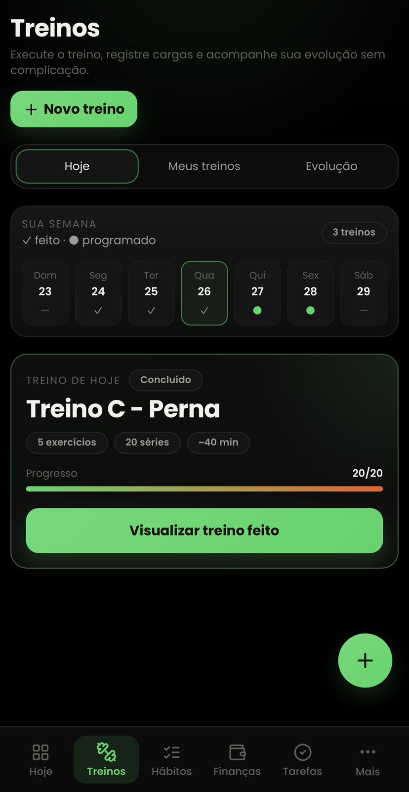
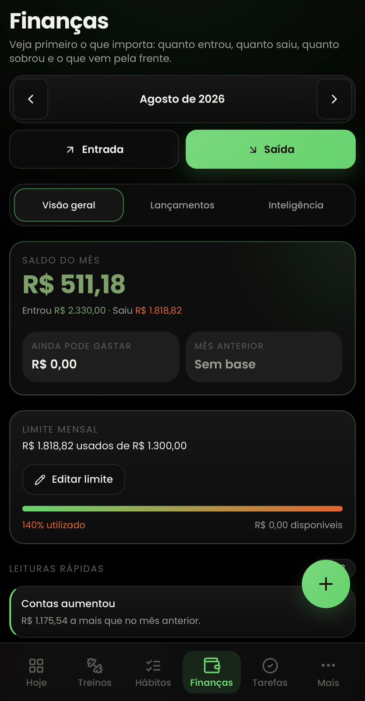
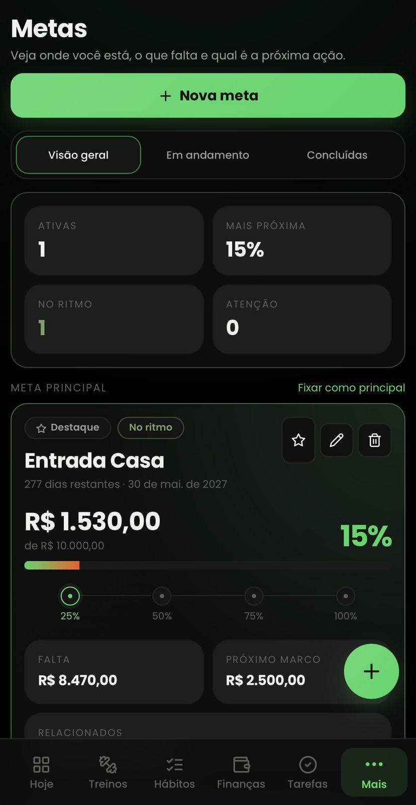
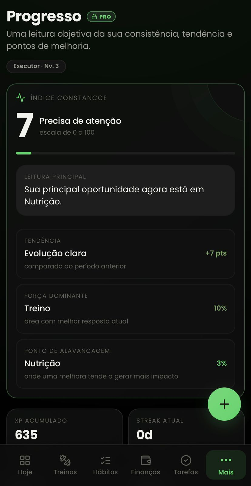
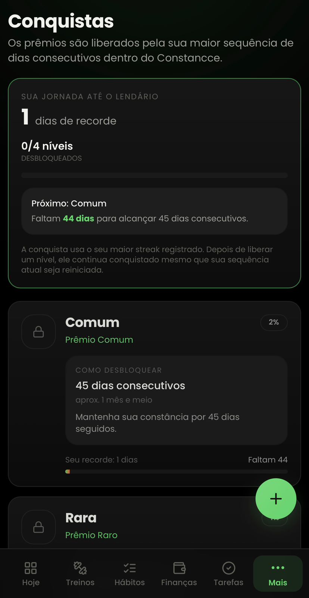

01 · HOJE
Abra o app e saiba exatamente o que precisa ser feito.
Hábitos, tarefas, compromissos e evolução diária em uma única visão.
- Prioridades do dia
- Tarefas e lembretes
- Visão rápida de execução

Descubra o que pode estar impedindo você de manter constância e enxergar o seu próprio progresso.
Conheça o sistema criado para transformar pequenas ações diárias em progresso visível.
Menos aplicativos. Menos informação espalhada. Menos coisas dependendo da sua memória.
Mais clareza para responder uma pergunta simples: você está avançando ou não?
O Constancce reúne execução, registro e progresso em uma experiência simples.
Hábitos, tarefas, compromissos e evolução diária em uma única visão.

Crie os hábitos que deseja desenvolver e transforme cada dia concluído em parte do seu histórico.

Organize treinos, exercícios e execução sem transformar sua academia em uma planilha complicada.

Registre entradas e gastos e entenda como as decisões de hoje afetam as metas de amanhã.

Transforme uma meta distante em etapas visíveis e veja claramente quanto já avançou.

O Constancce transforma ações em histórico para que você compare a única pessoa que realmente importa.

Adicione amigos, acompanhe pessoas próximas e valorize pequenas vitórias que, com o tempo, se tornam parte de quem você é.

Deixamos o bloco pronto para você inserir os primeiros relatos dos usuários sem inventar avaliações.
“Insira aqui um depoimento real sobre constância ou organização.”
Nome do usuário“Insira aqui um depoimento real sobre centralizar várias áreas no Constancce.”
Nome do usuário“Insira aqui um depoimento real sobre conseguir visualizar o progresso.”
Nome do usuárioO BASIC existe para você conhecer o Constancce na prática. Quando quiser remover as limitações de teste e ter a experiência completa, basta ir para o PRO.
Use gratuitamente uma versão limitada do Constancce para testar a experiência, criar seus primeiros registros e entender como o sistema funciona no seu dia a dia.
Libere a experiência completa do Constancce e use o sistema sem as limitações de teste do BASIC.
Quando ele terminar, você vai conseguir mostrar o quanto evoluiu?
Você começa a criar ritmo.
Sua rotina começa a deixar histórico.
Você já consegue comparar quem começou com quem continuou.
O que exigia esforço começa a fazer parte da rotina.
Você tem uma história inteira de evolução registrada.
O Constancce organiza, registra, lembra, mostra e acompanha.
Mas existe uma parte que nenhum aplicativo pode fazer por você:
EXECUTAR.Sim. O plano BASIC permite usar o Constancce gratuitamente com limitações de uso, pensado para você testar a experiência antes de decidir pelo PRO.
O BASIC é a versão gratuita de teste, com uso limitado. O PRO libera a experiência completa do plano, sem as limitações de teste do BASIC.
Na oferta atual, não. O acesso PRO é apresentado por R$ 37,90 em pagamento único, conforme as condições exibidas no momento da compra.
Sim. Você pode estruturar hábitos de acordo com aquilo que deseja desenvolver e acompanhar a execução ao longo dos dias.
Sim. O Constancce permite cadastrar e organizar treinos e visualizar os exercícios correspondentes a cada um.
Sim. Você pode registrar movimentações e acompanhar suas finanças dentro do próprio aplicativo.
Sim. Você pode registrar objetivos e acompanhar o avanço até a conclusão.
Sim. O Constancce possui recursos sociais para conectar usuários e tornar a jornada mais acompanhada.
O Constancce continuará evoluindo. Melhorias compatíveis com o seu plano poderão ser disponibilizadas conforme forem lançadas.
Crie hábitos, cadastre metas, organize seus treinos e veja se o sistema faz sentido para sua rotina.
A garantia deve seguir exatamente as condições exibidas no checkout e a legislação aplicável.
Conhecer os planosVocê pode continuar começando e parando ou começar hoje a registrar a história da pessoa que está construindo.